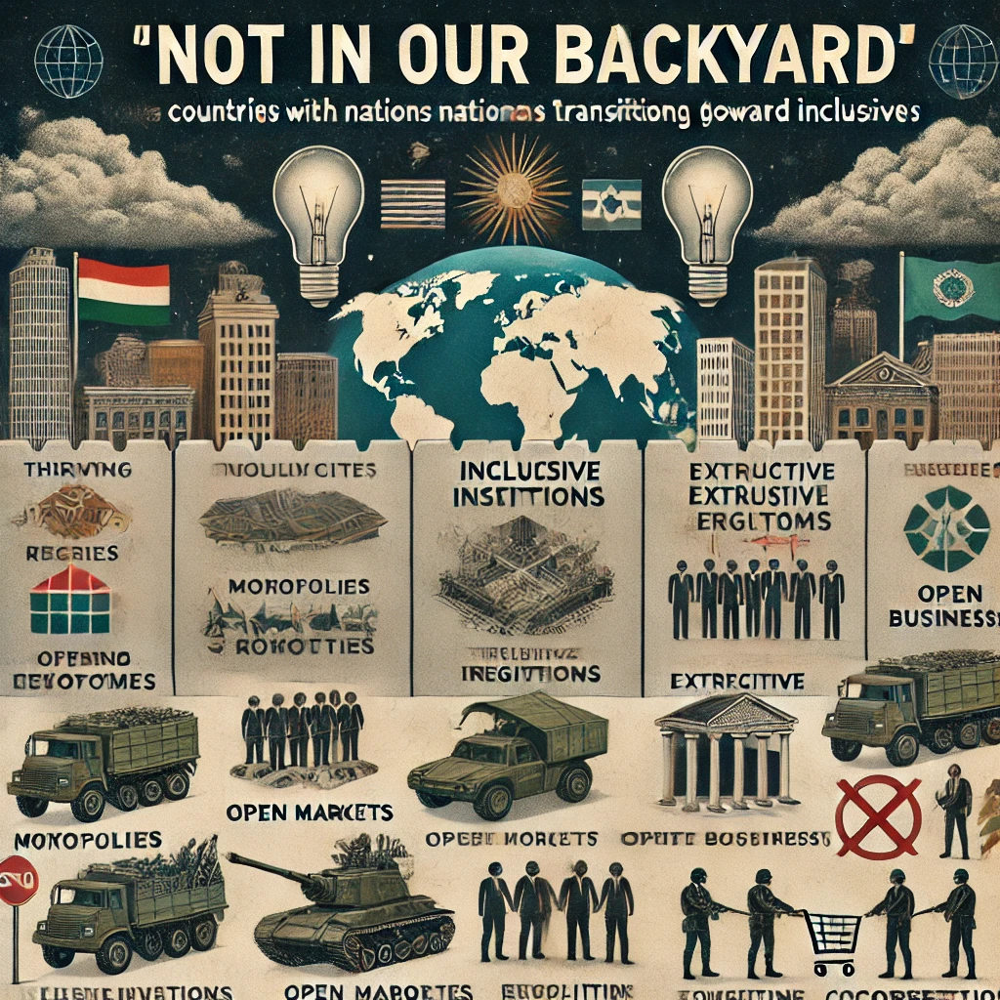

En este capítulo, los autores explican cómo los países que han desarrollado instituciones inclusivas buscan evitar que las naciones vecinas o aquellas en proceso de transición hacia instituciones inclusivas interfieran con su sistema. Esto puede tomar la forma de intervenciones militares, políticas de aislamiento económico o apoyo a regímenes extractivos en otros países para evitar que se desestabilicen sus propias instituciones.
Desde una perspectiva empresarial, las empresas extractivas son a menudo las primeras en oponerse a la transición hacia instituciones inclusivas. La competencia y la innovación que surgen en un sistema inclusivo amenazan sus beneficios monopolísticos y protecciones especiales.